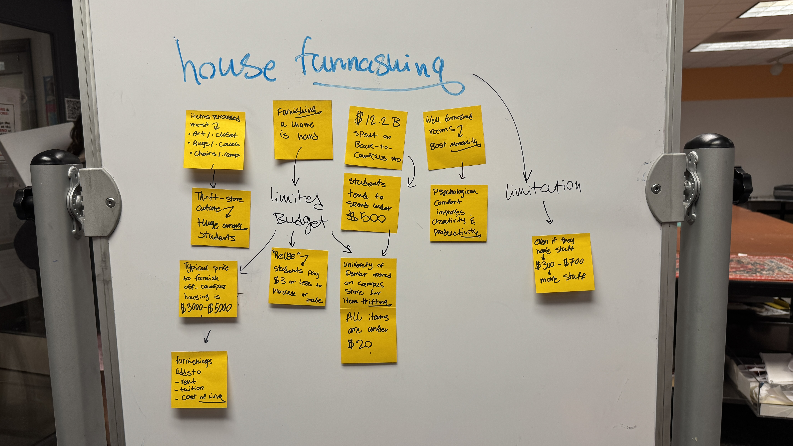
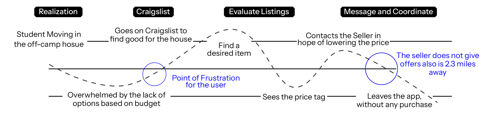
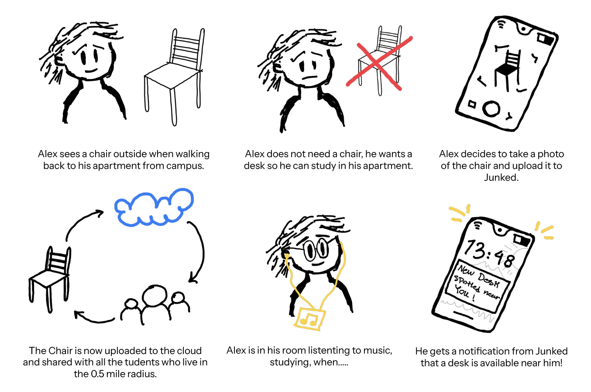
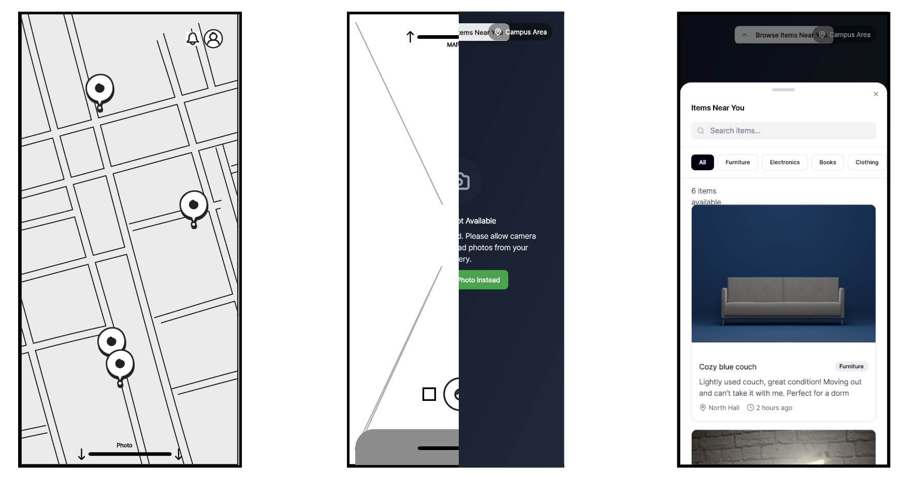
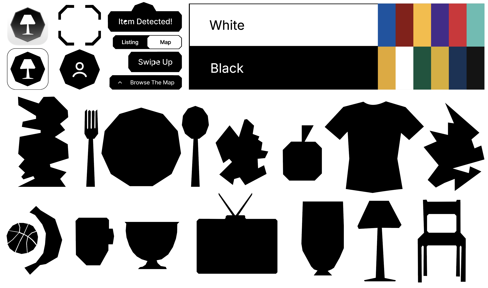
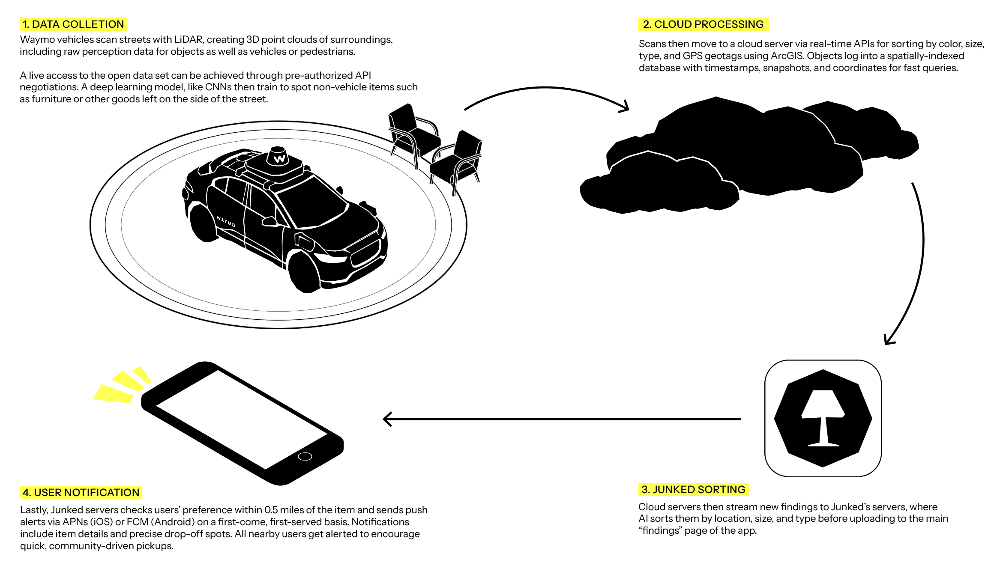

Case study — Personal exploration
Junked // New way of thirfitng

Overview
Furnishing a life on a student budget.
Junked is a self-initiated project inspired by my own struggle furnishing a college apartment on a tight budget. It creates a shared space where students post furniture, food, or objects they find on the street — so curb shopping stops being a matter of luck.
Unlike Craigslist or Facebook Marketplace, Junked isn't about buying and selling. It's about sharing: post what you find, claim what you need, for free.
Background
Housing costs are up. Free time is not.
Through informal interviews with friends, I found that students juggling coursework, internships, and California's housing crisis have little time or money left to furnish where they live.
Challenge
Minimal effort, Minimal cost.
How might we help overwhelmed students find what they need for their home with almost no time or budget to spare?
Budget
Students budget $150–$300 to furnish a room — full furnishing can run up to $1,000.
Time
Most students only have weekends and the gaps between classes to look for what they need.
Goal — design a peer-to-peer app centered on sharing, not selling: students post what they find on the street so others can claim it for free.
Research
Talking to the people living it.
I ran in-person interviews with four peers to understand their housing and furnishing struggles, then distilled the findings into a persona and journey map that shaped the app's first feature set.

Mapping student housing pain points

Early concept testing with peers
User pain points
What Students Said.
Six themes came up again and again — speed, trust, location, and a marketplace model that never fit "free."
"By the time I see a free listing, someone else has already grabbed it."
U1"I'm nervous about meeting strangers at their houses."
U2"I don't have a car, so half the 'good deals' are impossible to reach."
U2"Photos are so bad I can't tell if furniture is usable or AI-generated."
U2"Coordinating pickup times around my lab schedule is a nightmare."
U3"Most apps are built around selling, not just giving things away."
U4User persona
Street-savvy, time-poor.
Alex, 19 — CS junior, off-campus apartment
Browses Facebook Marketplace at night but skips most listings over bad photos or logistics. Weekends go to street thrifting and campus Discord channels, coordinating pickups with roommates.
Challenge
A strict $200 monthly budget and a bare apartment that's starting to hurt sleep and focus.
Goal
Score functional furniture for cheap, build a "homey" study nook, and give back by posting finds.
His current path — Craigslist, evaluate, message, negotiate — breaks down at the same two points: too few listings fit his budget, and sellers won't meet him halfway on price or distance.
Concept
See it, snap it, share it.
The core behavior was simple: a student spots something on the street and wants to share it in seconds. So the camera became the front door of the app — similar to how Snapchat opens straight to camera to prioritize in-the-moment sharing.

User journey mapping

Concept storyboard
"It feels like a full-time job just to furnish a tiny student apartment."
LoFi to HiFi
Camera, map, and feed — tightly connected.
Rapid testing showed students wanted listings as both a scrollable feed and a navigable map. The final flow uses one vertical gesture: swipe up from the camera for listings, swipe down for the map.

From lo-fi wireframes to hi-fi screens
Visual system
Simple enough to adapt to any campus.
A cohesive, high-contrast icon and color system that stays legible at a glance — and can be recolored to match each university's own palette.

Icon, color, and shape system
Final product
From street to notification in one loop.
A student photographs an item, the app auto-detects and geotags it, and everyone within a half-mile radius gets notified — first come, first served.

Final app screens
Speculative design
What if the streets scanned themselves?
As a stretch idea, I explored tapping Waymo's always-on street-scanning LiDAR to auto-detect curbside items and notify nearby students even faster.

LiDar Based Detection Concept
Limitations & takeaways
Promising, with real guardrails.
Waymo's sensor data is tightly controlled today, and any street-level imagery raises real privacy questions about how bystanders and public spaces are captured and stored. With the right partnerships and safeguards, though, I believe this kind of infrastructure could do more than just drive.
More broadly, Junked reinforced something simple: students don't need another marketplace — they need a faster, kinder way to pass things on.